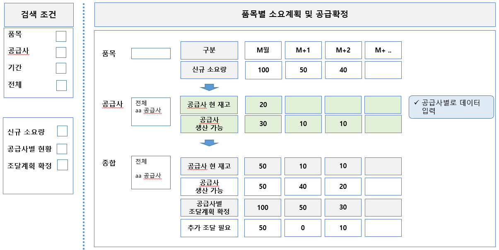
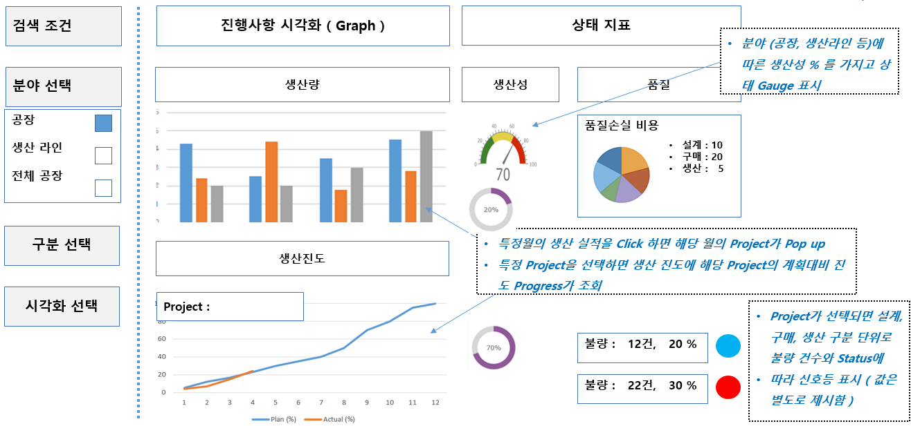
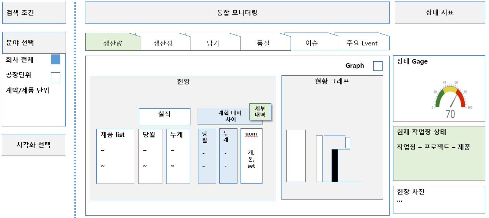
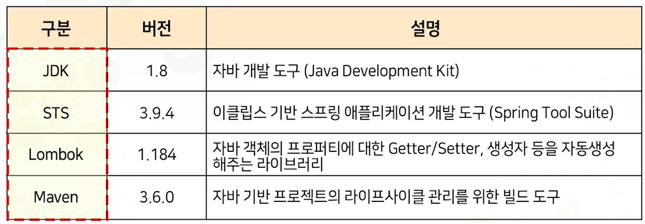

공급망 협업
00. KIR_BoK
통합 모니터링
* 통합 모니터링 개념
* 통합 모니터링 생산성
00. KIR_BoK
빅데이터 실행 오픈 플랫폼
* use case Idea 기반의 빅데이터 분석 오픈 플랫폼

00. KIR_BoK
Micro Service 방식의 개발 특징
* MSA 설계와 개발을 위한 개발환경 예시
디지털 기반의 사업 모델
우리가 하는 사업이 10년 후에도 경쟁력이 있는가?
- 그것을 가능케 하는 비즈니스 모델은 무엇인가 ?
- 우리의 제품이 수주 이후에 설계, 구매 및 생산을 걸쳐서 얼마나 빠르게 고객에게 전달되며, 가격 경쟁력은 어떤가 ?
- 기업 내부의 업무 프로세스, 운영 중인 시스템 및 그 과정 속에서 필요한 데이터가 그 자체 만으로도 핵심 경쟁력을 갖추고 있는가 ? 그것으로 인한 고객 가치, 외부와 협력 수준 및 외부 변화에 대응 수준으로 경쟁사와 차별화를 가지고 있는가?
* 사업 모델 구조
제품
00. KIR_BoK수주산업 제조업의 디지털 기업전략, 상황별 방법론, 핵심 디지털 기술, 스마트 팩토리 수준진단 및 구축 과정에서 필요로 하는 관련 지식들을 찾아서 활용할 수 있도록 전체 Profile 정보를 제공
빅데이터 실행 오픈 플랫폼
use case Idea (w/Platform)기업 업무 담당자들이 빅데이터 platform에서 스스로 데이터를 올려서 가장 유사한 use case Idea를 선택하여 입력 데이터의 형태, 전처리 방법 및 분석 결과에 대한 안내 절차를 참조하여 본인이 직접 해당 절차를 수행하여 자신이 보유한 데이터로 원하는 분석 결과가 가능한 지를 빠르게 검증해 볼 수 있다.
- 사업관리 : 원가, 일정, Risk
- 설계 정합성 & 3D Model
- 구매 원가
- 생산 최적화
- 품질 관리
- 설비 예지 정비
- 문서 관리
- 계약 관리
컨설팅 지원
00. KIR_BoK수주산업 제조업의 디지털 기업전략, 상황별 방법론, 핵심 디지털 기술, 스마트 팩토리 수준진단 및 구축 과정에서 필요로 하는 관련 지식들을 찾아서 활용할 수 있도록 전체 Profile 정보를 제공
기업에서 발생하는 모든 업무 중에서 단지 정보의 공유, 전달, 외부에 구매 요청, 비용 지불 등 모든 관리적인 업무는 Micro Service로 쪼개어 필요한 즉시 비즈니스 로직을 구성하여 활용할 수 있도록 하여, 기업이 가장 잘 할수 있는 것에 집중하도록 한다.
- 제일 먼저 고민할 부분이 기업이 수행하는 사업방식이나 제품의 경쟁력이다.
- 두번째는 제품을 만들어 내는 설계, 구매, 생산방식이 얼마나 효율화되어 있는 지에 대한 운영 효율화 이다.
- 세번째는 외부의 변화에 신속하게 대응할 수 있는 프로세스와 시스템을 갖추고 새로운 가치를 위해 외부와 협력하고 빅데이터를 얼마나 활용할 수 있는 지 이다.